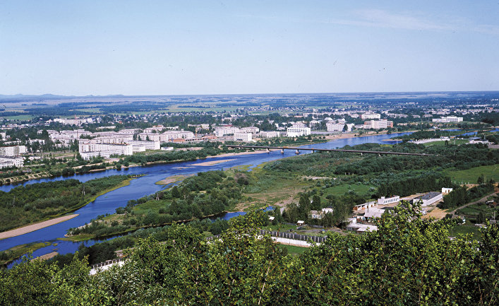
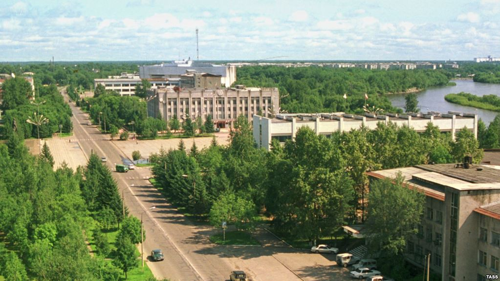
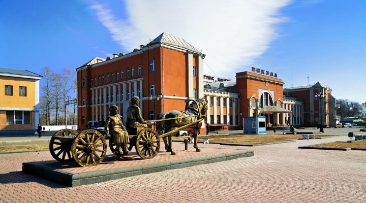

Еврейская автономная область — субъект Российской Федерации, входит в состав Дальневосточного федерального округа. Образована 7 мая 1934 года. ЕАО — единственный регион Российской Федерации, имеющий статус автономной области и единственное в мире, помимо Израиля, еврейское административно-территориальное образование с официальным юридическим статусом.
Еврейская автономная область расположена в южной части российского Дальнего Востока. На западе граничит с Амурской областью, на востоке – с Хабаровским краем, на юге ее граница по реке Амур совпадает с государственной границей России и Китая. Площадь территории области составляет 36,3 тыс. кв. километров. Численность населения на 1 января 2013 года – 172,7 тысяч человек. Областной центр – город Биробиджан.
Область имеет выгодное географическое положение. Она находится в непосредственной близости к побережью Тихого океана и основным экономическим партнерам в этом регионе, имеет выход в моря Тихого океана через Амурский водный путь. По ее территории проходит Транссибирская железнодорожная магистраль, которая обеспечивает кратчайшие маршруты из Западной Европы и Ближнего Востока в страны Азиатско-Тихоокеанского региона. На территории Еврейской автономной области выявлены проявления и месторождения полезных ископаемых, в том числе россыпного золота, олова, железа, марганца, магнезитов, брусита, графита, известняков и доломитов, фосфоритов, минеральных красок, природных облицовочных камней, керамзитового сырья. Имеются месторождения бурого угля и торфа.
Экономическая ситуация в Еврейской автономной области характеризуется ростом производства товаров и услуг, инвестиций в основной капитал, реальных денежных доходов населения, увеличением коммерческого оборота. Активно осуществляется промышленное и жилищное строительство. На промышленных предприятиях области производятся чулочно-носочные изделия, трикотажные изделия, кожаная обувь, заготавливается и перерабатывается лес, изготавливается разнообразная офисная и бытовая мебель, цемент, строительные и отделочные материалы, продукты питания и другие востребованные рынком товары. Для повышения качества продукции, ее конкурентоспособности ведется модернизация предприятий, внедряется современная техника. Область располагает земельными массивами, пригодными для освоения их под пашню, сенокосы и пастбища. Наличие естественных кормовых угодий создает благоприятные возможности для развития животноводства, особенно крупного рогатого скота. Область может полностью обеспечить себя овощной и молочной продукцией за счет собственного производства.
  